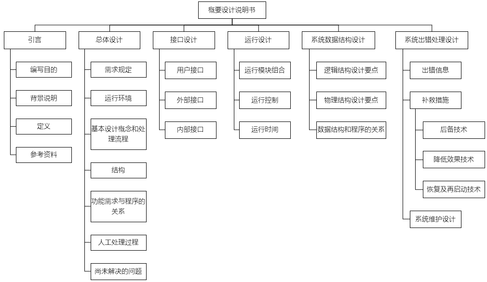
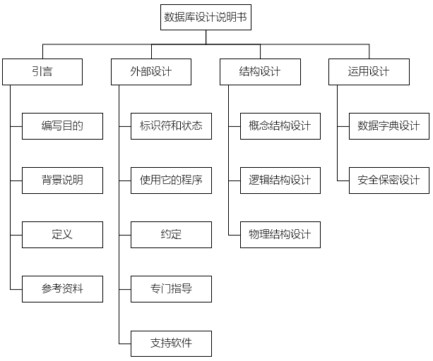
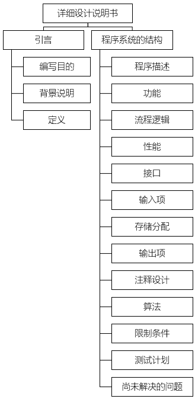
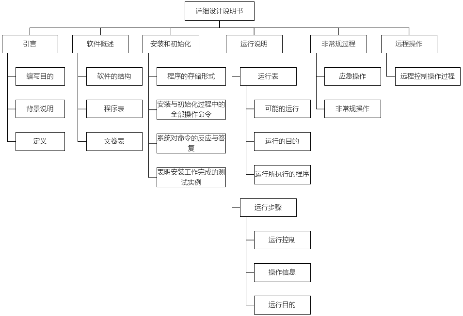

参加人员：结构设计负责人、设计文档的作者、课题负责人、行政负责人、对开发任务进行技术监督的软件工程师、技术专家、其他方面代表
主要内容：审查软件结构设计和接口设计的合理性。要充分彻底地评价数据流图，严格审查结构图中的参数传输情况、检查全局变量和模块间的对应关系，对系统接口设计进行检查，纠正设计中的错误和缺陷，使有关设计者了解与任务有关的接口情况


逻辑
数据结构
界面
设计者和设计组的另一成员一起进行静态检查
由检查小组进行较正式的软件结构设计检查
由检查小组进行正式的设计检查，对软件设计质量给出评价
